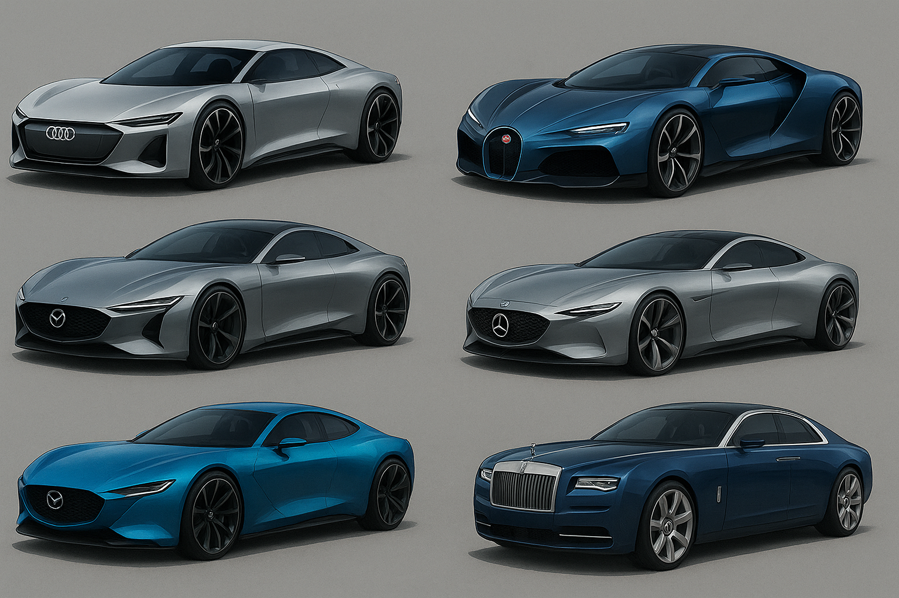

Интересные факты о наших машинах
Факты про AUDI
AUDI оснащена тремя двигателями один двигатель внутреннего сгорания V10
и два электрических,максимальная скорость составляет 389 км/ч.
Так же ауди имеет комфортный салон,независимую подеску и переключатель с
возможностью выбора езды.
Факты про Bugatti
Bugatti оснащена двигателем внутреннего сгорания W16 и два электрических
двигателя,максимальная скорость составляет 520км/ч.
Bugatti имеет безупречный внешний вид,низкий клиренс что позваляет иметь
лучшее сцепление с дорогой,так же есть спойлер который открывается сам
после 120км/ч.
Факты про Mercedes
Первый в мире седан с голографической панелью управления, проецируемой прямо на лобовое стекло. Оснащён системой «Road Whisper», которая способна считывать эмоции водителя и подстраивать подвеску под его настроение. Разгон до 100 км/ч за 2,4 секунды, благодаря уникальному гибридному двигателю на водороде и плазме.
Факты про Lotus
Кузов выполнен из чёрного наноуглеродного стекла, которое меняет прозрачность при изменении скорости. Способен «прилипать» к трассе с помощью магнитно-аэродинамической системы стабилизации. Создан всего в 12 экземплярах, каждый из которых имеет свой уникальный тюнинг от мастеров Mark.
Факты про Mazda
Работает на молниевой батарее, которая заряжается всего за 8 минут от специальной станции. Выхлопная система имитирует звук грома, а при разгоне виден лёгкий электрический разряд по кузову.
Факты про Rolls Royce
Салон украшен реальными осколками метеоритов и воссозданным ночным небом из 5000 светодиодов. Двигатель работает настолько тихо, что производители встроили в него «аристократичный шёпот» — искусственный звук, напоминающий дыхание. Владельцы получают эксклюзивный ключ в виде миниатюрного глобуса из белого золота